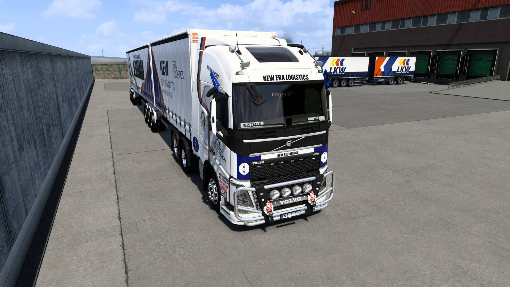

01
Professionalism
We represent our VTC with respect, consistency and a positive attitude on the road.
SOUTH AFRICAN ROOTS · GLOBAL ROADS
Welcome to New Era Logistics. We are more than a VTC. We are community built on the Euro Truck Simulator 2 and American Truck Simulator games created by scs software, We are driven by teamwork, and united by a passion for trucking.
New Era Logistics is a South African-founded virtual trucking company bringing drivers together from around the world through Euro Truck Simulator 2 and American Truck Simulator.
Founded by Wiseman in September 2023, New Era Logistics set out to build something bigger than a fleet: a welcoming, ambitious community where every driver has a place and every journey matters.
In our first year, we made our mark in the ETS2 VTC community and reached the number-one position on trucksbook nationally. We continue to value the people behind every delivery as much as the distance on the spedometer.
Good miles are made by good people. These are the principles behind every trip we take together.
We represent our VTC with respect, consistency and a positive attitude on the road.
We look out for one another, celebrate shared wins and make every driver feel included.
We bring our love for trucking, the open road and the ETS2 experience to every convoy.
We create room for friendships, conversations and memorable moments beyond deliveries.
There is more to New Era Logistics than reaching the destination. We bring our drivers together through shared experiences, friendly competition and time spent on the road.
Get behind the wheel with fellow members and enjoy the road as one fleet.
Take part in community activities, group drives and special occasions.
Connect with an international group that shares your enthusiasm for trucking.
From a founder's idea to a name recognised in the ETS2 VTC community, our story is still being written.

Wiseman founded New Era Logistics with a vision for a strong, welcoming virtual trucking community.
New Era Logistics reached the number-one position in the ETS2 VTC community within its first year.
We keep building our community through teamwork, events and a shared passion for the journey.
Bring your passion for trucking. Find your people. Become part of the New Era Logistics journey.
All drivers welcome · Wherever you're from, there's a place on the road for you.